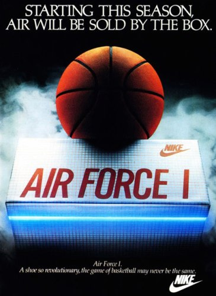

WOMB CHAIR - 1948
Designer Eero Saarinen's tried for the Womb Chair back in the early 1940s, was to design a chair that was 'like a basket full of pillow, something I could really curl up in'. Eero Saarinen was eager to explore the possibilities of a chair that achieved comfort through the shape of its shell, not necessarily the depth of its cushioning. It is designed to facilitate a relaxed sitting posture, providing emotional comfort and a sense of security, hence the name 'womb'. This mid-century classic supports countless positions and offers a comforting oasis.
Designer Eero Saarinen's tried for the Womb Chair back in the early 1940s, was to design a chair that was 'like a basket full of pillow, something I could really curl up in'. Eero Saarinen was eager to explore the possibilities of a chair that achieved comfort through the shape of its shell, not necessarily the depth of its cushioning. It is designed to facilitate a relaxed sitting posture, providing emotional comfort and a sense of security, hence the name 'womb'. This mid-century classic supports countless positions and offers a comforting oasis.


AIR FORCE 1 - 1982
'Air in a box'. That was Nike's simple ad campaign slogan when they launched the shoe. In 1982, Nike released the Air Force 1, a basketball shoe that featured a revolutionary technological innovation: a pocket of air in the heel for cushioning and support. The shoe, although expensive at $89.95, was an immediate hit among NBA. Being the first shoe with air technology, it is estimated that about 12 million pairs were sold at its peak in 2005. That a 25-year-old sneaker was the best-selling athletic shoe last year reflects a change in an industry whose product is becoming valued more for its fashion relevance than for its performance. "People want to analyze it death, but it's really just that it looks great on your foot," said Bobbito Garcia, a sneaker and hip-hop expert who wrote the book "Where'd You Get Those? New York City's Sneaker Culture: 1960-1987."
'Air in a box'. That was Nike's simple ad campaign slogan when they launched the shoe. In 1982, Nike released the Air Force 1, a basketball shoe that featured a revolutionary technological innovation: a pocket of air in the heel for cushioning and support. The shoe, although expensive at $89.95, was an immediate hit among NBA. Being the first shoe with air technology, it is estimated that about 12 million pairs were sold at its peak in 2005. That a 25-year-old sneaker was the best-selling athletic shoe last year reflects a change in an industry whose product is becoming valued more for its fashion relevance than for its performance. "People want to analyze it death, but it's really just that it looks great on your foot," said Bobbito Garcia, a sneaker and hip-hop expert who wrote the book "Where'd You Get Those? New York City's Sneaker Culture: 1960-1987."